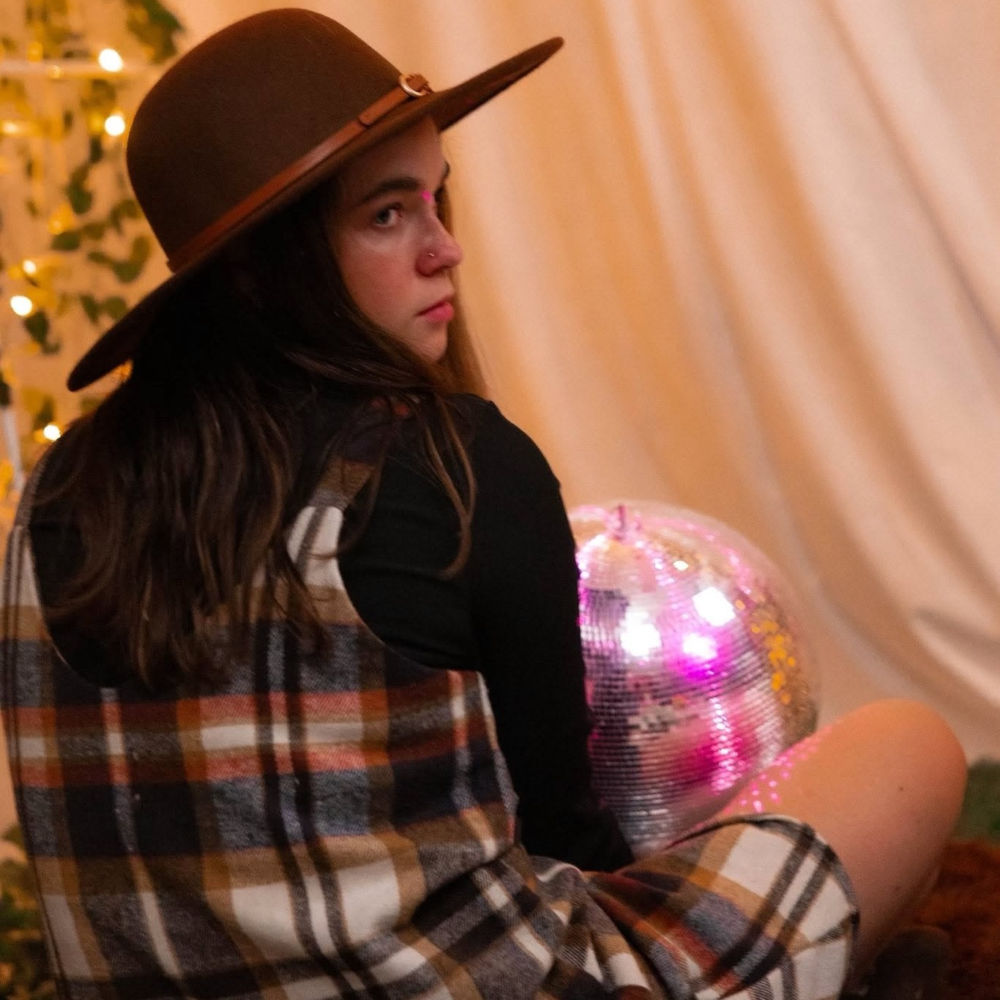
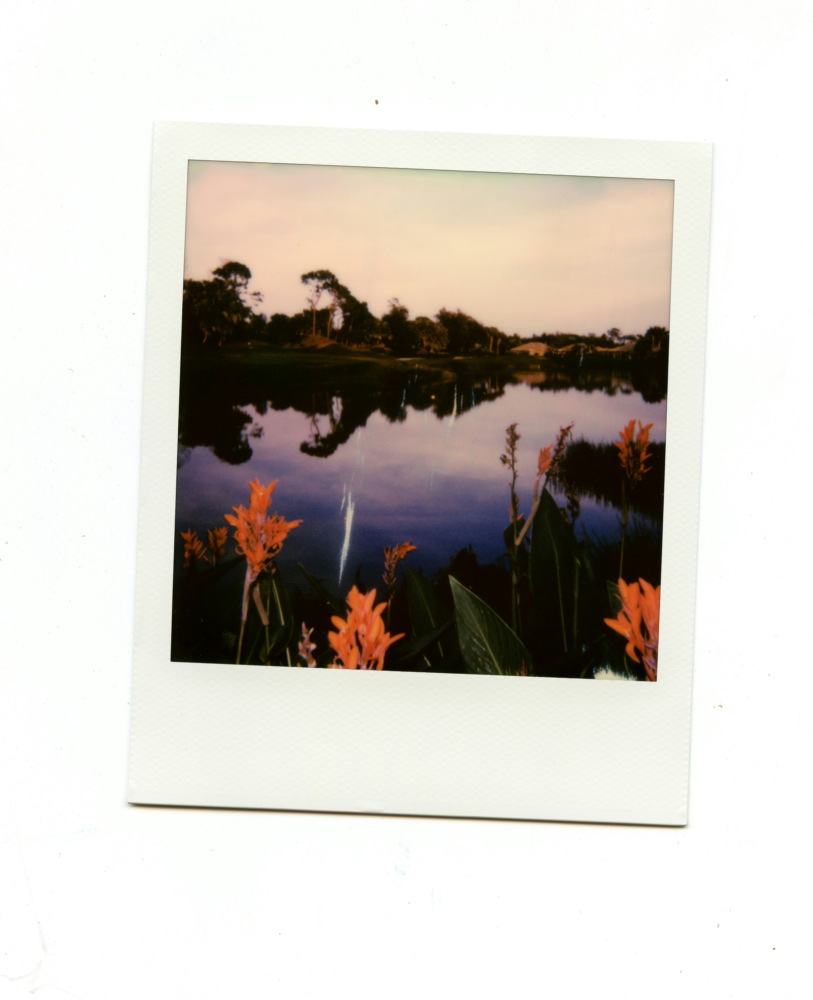

Tour Guide: Amanda
DEPATURES | ORIGINS
-
CA1025
PRE-BOARDINGBOARDING
I didn't grow up a well-rounded traveler, but a last-minute border crossing in 2017 immediately sparked a love for global traveling. Get a peak inside my camera roll here: Film Roll
-
EN0126
DOORS CLOSINGFINAL BOARDING CALL
With each destination I have left a piece of myself there, and in return brought a lesson home. Learn about the highlights and takeaways here: Field Notes
-
BA0419
GATE CLOSEDDEPARTED
Since becoming an avid traveler lessons aren't the only thing I have gained insight on. Browse my personal recommendations to make traveling easier here: Travel Gear